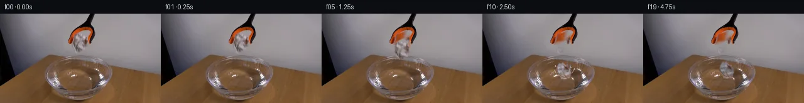

![首帧]()

Round 00
2026-11-05T09:05:07.079000+00:00像素候选变化代码 +236/−0inspection 更新
pixels 9b6f5d4452a428cc · code 88414795ce6326ad
查看本轮 generate.py 真实 diff
--- previous/generate.py +++ current/generate.py @@ -0,0 +1,236 @@ +#!/usr/bin/env python3 +"""Generate the PixelWorld-Text continuation using local pixel operations only.""" + +from pathlib import Path + +import cv2 +import numpy as np +from PIL import Image, ImageDraw + +from artifact_io import save + + +ROOT = Path(__file__).resolve().parent +H, W = 144, 256 +PAPER_CENTER = (129.0, 45.0) + + +def alpha_composite(base, premul, alpha): + """Composite a premultiplied RGB layer over uint8 RGB base.""" + a = np.clip(alpha[..., None], 0.0, 1.0) + out = premul + base.astype(np.float32) * (1.0 - a) + return np.clip(out, 0, 255).astype(np.uint8) + + +def make_clean_plate(src): + """Remove the paper in its small central patch while retaining the tool.""" + yy, xx = np.mgrid[:H, :W] + paper_region = np.zeros((H, W), np.uint8) + polygon = np.array( + [[120, 28], [136, 28], [143, 34], [146, 43], [142, 51], + [136, 58], [123, 61], [115, 54], [111, 44], [115, 34]], + np.int32, + ) + cv2.fillPoly(paper_region, [polygon], 255) + paper_region = cv2.GaussianBlur(paper_region, (3, 3), 0) + hole = (paper_region > 80).astype(np.uint8) * 255 + clean = cv2.inpaint(src, hole, 4.0, cv2.INPAINT_TELEA) + + # Restore the photographed orange and black structural pixels of the jaws. + f = src.astype(np.int16) + r, g, b = f[..., 0], f[..., 1], f[..., 2] + roi = (xx >= 107) & (xx <= 152) & (yy <= 62) + orange = (r > 75) & (r > g * 1.22) & (r > b * 1.42) + dark = (r < 78) & (g < 76) & (b < 76) + structure = ((orange | dark) & roi).astype(np.uint8) + structure = cv2.dilate(structure, np.ones((3, 3), np.uint8), iterations=1) + structure &= roi.astype(np.uint8) + # Keep restoration away from the central paper core unless unmistakably tool-colored. + central = (xx >= 119) & (xx <= 139) & (yy >= 31) & (yy <= 56) + structure[central & ~(orange | dark)] = 0 + edge_alpha = cv2.GaussianBlur(structure.astype(np.float32), (3, 3), 0)[..., None] + clean = np.clip(src * edge_alpha + clean * (1.0 - edge_alpha), 0, 255).astype(np.uint8) + + # Extract an irregular paper alpha from the difference to the clean plate. + delta = np.linalg.norm(src.astype(np.float32) - clean.astype(np.float32), axis=2) + soft = np.clip((delta - 2.5) / 16.0, 0.0, 1.0) + silhouette = (paper_region.astype(np.float32) / 255.0) + paper_alpha = soft * silhouette + paper_alpha[central & (delta > 8)] = np.maximum(paper_alpha[central & (delta > 8)], 0.92) + paper_alpha = cv2.GaussianBlur(paper_alpha, (3, 3), 0) + paper_alpha *= silhouette + return clean, paper_alpha.astype(np.float32) + + +def warp_paper(src, alpha, center, angle, scale=1.0, wetness=0.0): + """Rotate/scale/translate the extracted crumpled-paper sprite.""" + matrix = cv2.getRotationMatrix2D(PAPER_CENTER, angle, scale) + matrix[0, 2] += center[0] - PAPER_CENTER[0] + matrix[1, 2] += center[1] - PAPER_CENTER[1] + a = cv2.warpAffine(alpha, matrix, (W, H), flags=cv2.INTER_LINEAR, + borderMode=cv2.BORDER_CONSTANT, borderValue=0) + color = src.astype(np.float32) + if wetness: + # Wet fibers darken, lose warmth, and pick up a restrained water-gray cast. + target = np.empty_like(color) + target[..., 0] = color[..., 0] * 0.72 + target[..., 1] = color[..., 1] * 0.76 + target[..., 2] = color[..., 2] * 0.80 + color = color * (1.0 - wetness) + target * wetness + premul = cv2.warpAffine(color * alpha[..., None], matrix, (W, H), + flags=cv2.INTER_LINEAR, borderMode=cv2.BORDER_CONSTANT, + borderValue=0) + return premul, a + + +def blend_shadow(frame, x, strength, radius): + """Add a soft projected shadow on the water, clipped to the bowl surface.""" … diff truncated; 149 more lines …